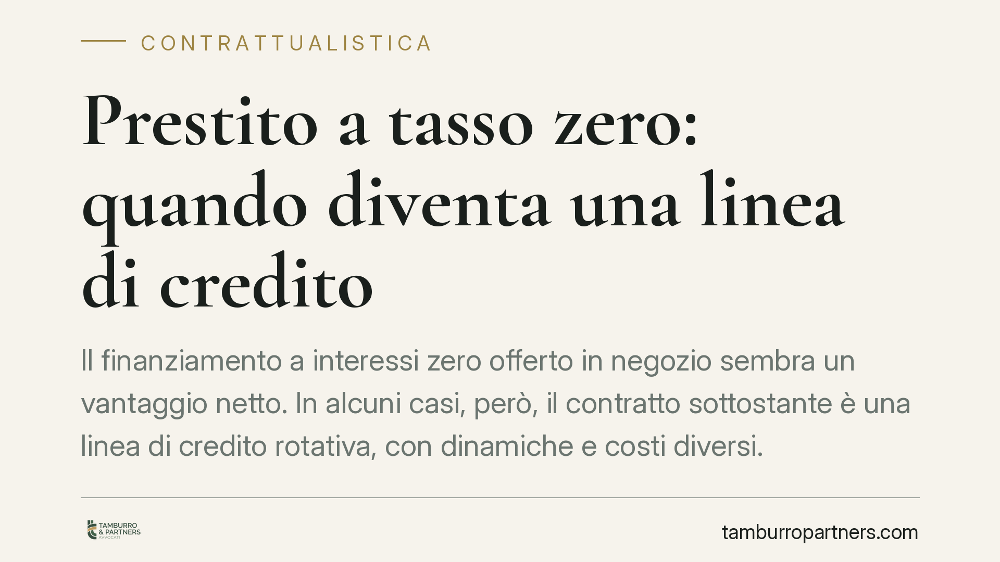

Prestito a tasso zero: quando diventa una linea di credito
Il finanziamento a interessi zero offerto in negozio sembra un vantaggio netto. In alcuni casi, però, il contratto sottostante è una linea di credito rotativa, con dinamiche e costi diversi. Capire cosa si sta firmando è essenziale, anche alla luce delle tutele rafforzate per i consumatori. Ecco le differenze giuridiche e le verifiche da fare prima di sottoscrivere.

Il caso: due prodotti diversi sotto la stessa etichetta
Molti acquisti al dettaglio vengono proposti con la formula del "tasso zero": il bene si paga a rate senza interessi. La formula è lecita e spesso conveniente. Il problema nasce quando dietro l'offerta non c'è un mutuo di scopo a rimborso predeterminato, ma una linea di credito rotativa (revolving), che il consumatore attiva firmando senza percepirne la natura.
La differenza non è di dettaglio. Nel primo caso si restituisce un importo definito in rate fisse; nel secondo si ottiene un fido riutilizzabile: man mano che si rimborsa, il credito si ricostituisce e diventa nuovamente disponibile, di norma con interessi che scattano sugli utilizzi successivi.
Inquadramento normativo
Il prestito classico rientra nello schema del mutuo disciplinato dagli artt. 1813 e seguenti del codice civile: una parte consegna una somma o una quantità di beni e l'altra si obbliga a restituire altrettanto. Nella versione a tasso zero manca la componente onerosa, ma resta ferma la struttura del rimborso di un capitale determinato.
La linea di credito, invece, è un contratto di credito al consumo regolato dal Testo Unico Bancario (T.U.B.), artt. 116 e seguenti, che impone obblighi di trasparenza precontrattuale, chiarezza sulle condizioni economiche e informazione sul TAEG. L'attività di collocamento tramite negozi e intermediari è soggetta alla vigilanza dell'OAM (Organismo Agenti e Mediatori), che tiene gli elenchi degli operatori abilitati.
Le direttive europee sul credito al consumo hanno rafforzato la posizione del consumatore, con particolare attenzione alla valutazione del merito creditizio e all'informazione chiara sui prodotti rotativi, spesso più costosi e meno prevedibili nella loro dinamica di rimborso.
Implicazioni pratiche per chi acquista
Il rischio concreto è duplice. Primo: firmare pensando di aver acceso un finanziamento a rate chiuso e ritrovarsi titolare di un fido permanente, con una carta o un conto collegato utilizzabile per ulteriori spese. Secondo: l'assenza di interessi vale solo per l'operazione iniziale; ogni utilizzo successivo della linea può essere gravato dal tasso ordinario del prodotto revolving, di regola elevato.
A questo si aggiunge l'effetto sull'indebitamento. Una linea di credito attiva incide sul profilo creditizio del consumatore anche quando non è utilizzata, perché rappresenta un'esposizione potenziale rilevata dai sistemi di informazione creditizia. Chi intende chiedere un mutuo o un altro finanziamento dovrebbe tenerne conto.
È bene ricordare che la firma in negozio non attenua gli obblighi informativi del finanziatore. La documentazione precontrattuale deve indicare in modo comprensibile la natura del prodotto, il costo complessivo e le condizioni di rimborso. Un'informazione carente o ingannevole può rilevare sul piano della trasparenza e della correttezza contrattuale.
Cosa fare in concreto
- Chiedi la qualificazione del contratto: verifica per iscritto se stai sottoscrivendo un finanziamento a rate fisse o una linea di credito rotativa. La distinzione deve emergere con chiarezza dal modulo.
- Leggi il TAEG e le condizioni post-rimborso: controlla il tasso applicato a eventuali utilizzi successivi al primo. Il "tasso zero" spesso copre solo l'acquisto iniziale.
- Conserva la documentazione precontrattuale: modulo informativo standardizzato, contratto e piano di rimborso vanno archiviati integralmente, utili in caso di contestazione.
- Verifica l'abilitazione dell'intermediario: controlla che l'operatore che raccoglie la sottoscrizione sia iscritto negli elenchi OAM.
- Valuta l'estinzione anticipata: se il prodotto non ti serve come fido permanente, informati sulle modalità e sui tempi per chiudere la linea di credito dopo aver saldato l'acquisto.
Quando il testo contrattuale è ambiguo o le condizioni economiche non risultano trasparenti, consigliamo di sospendere la firma e sottoporre la documentazione a una verifica preventiva. Comprendere la reale natura dell'impegno prima di sottoscriverlo evita esposizioni non volute e costi imprevisti.
---
*Contributo informativo a cura di Tamburro & Partners - Avv. Giuseppe Tamburro. Non costituisce parere legale.*
Ogni contratto ha il suo equilibrio.
Se vuoi una revisione delle clausole o una redazione su misura, scrivi allo studio. Ti rispondiamo entro un giorno lavorativo.